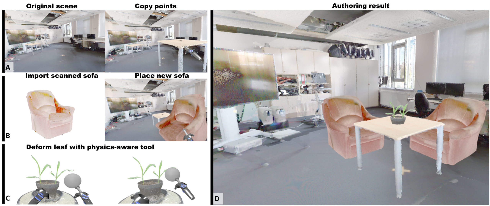
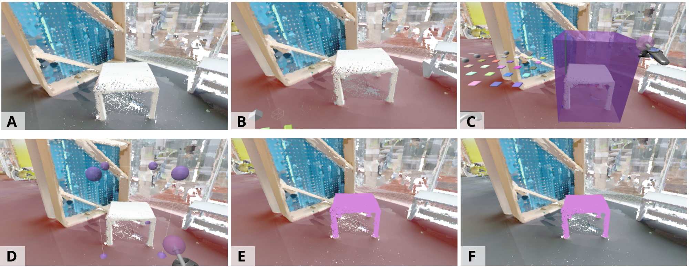
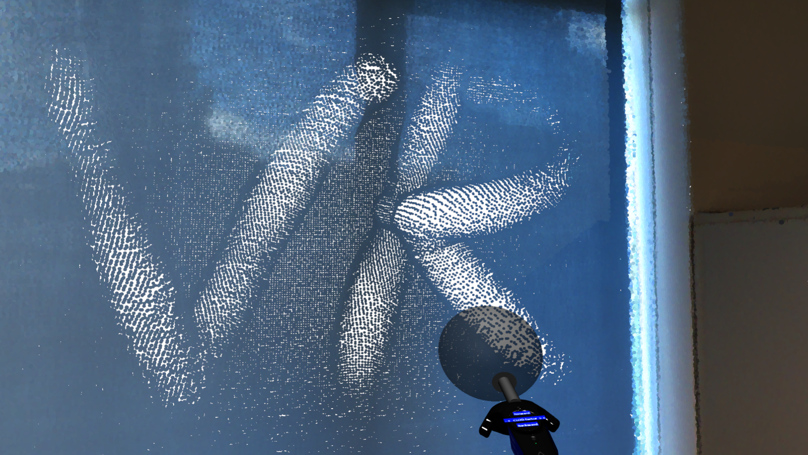

This paper presents PointShopVR, an immersive point cloud authoring system in Virtual Reality (VR) that enables intuitive creation, manipulation, and refinement of large 3D point clouds. To support real-time interaction with dense data, our system integrates a simple acceleration data structure and a continuous level-of-detail (CLOD) rendering, ensuring high frame rates in VR. PointShopVR provides a handful of authoring operations—including point addition, deletion, labeling, copy–paste, translation and deformation—each offering instant visual feedback for seamless editing. We evaluate PointShopVR through a user study in which users complete diverse editing tasks within minutes, demonstrating both the usability and effectiveness of immersive point cloud authoring. Compared to traditional desktop-based tools, PointShopVR offers enhanced accessibility, natural interaction, and immersive feedback, making it a powerful platform for large-scale 3D data exploration and creative editing in VR.


